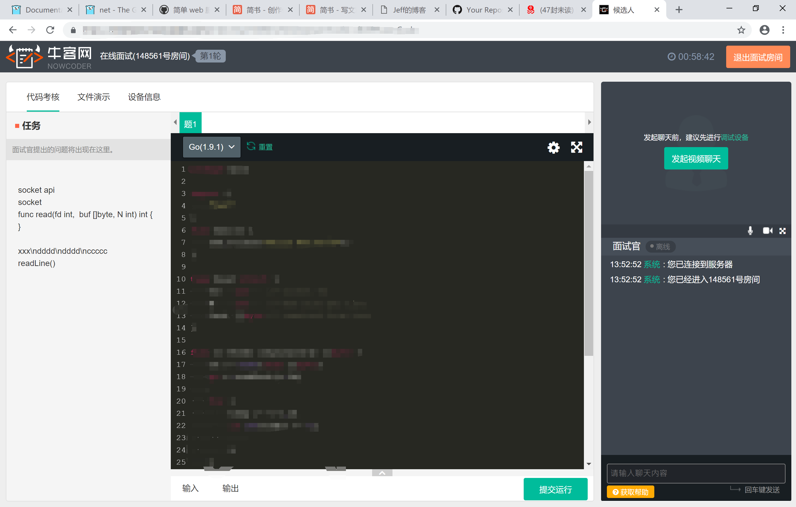

面试经历-字节跳动后台开发(基础架构)实习岗
昨天下午尝试了第一次视频面试，面试的岗位是字节跳动的[后台开发-基础架构]实习岗，由于我本身的技术的确是远远没有达到岗位的要求，所以这一次的面试也只是抱着试一试的态度，了解一下面试的流程，积累一些经验，同时通过面试进一步了解自己应该努力的方向。
时间定在了周日下午的四点，直到面试前都没有加上HR的微信，所以在面试前心中还是有种“我要被鸽了”的感觉。点开通知邮件发给我的面试链接以后，点开展示的就是牛客网的面试系统界面:

四点过了两分钟，面试官就上线了，是个很有亲和力的中年男子。此时我还是很紧张的，毕竟是第一次参加正经的面试，所以谈吐都有些不自然了。调整视频连接耽误了一小段时间。
编程
面试官看了看我的简历，上面有一项是“熟悉Go语言编程”；我听到他提起这个心里就凉了一半：其实自己对于Go语言也借由本学期的服务计算课进行了个入门而已，远算不上熟悉。然后他说有一道题特别适合用Go来编程，就出给我做了:
先定义了一个read函数，这个函数就是一个Socket接口，每次会读数据入缓冲区；然后要我写一个readLine函数，按行输出Socket读的数据，他一开始先给了我两个提示：
read是会阻塞的- 每次
read得到的数据有可能有换行符\n，有可能没有，也有可能会有多个
这是面试官给出的函数定义:
// read: socket api
// - fd: socket 的文件fd
// - buf: 读入缓冲区
// - N: 最大数据大小
func read(fd int, buf []byte, N int) int {
}
听完题后我整个人就很慌了，因为心里总有股声音觉得自己不会。而实际上我也的确对Go不熟悉，很多类似append, channel 这样的操作还需要查自己或别人的博客去写。
虽然慌的一匹，但总归还是有一点思路（现在想来这也不过就是一道生产者、消费者的问题），中间面试官提示我用channel去做这一道题，但我并没有用过所以短暂思考后也放弃了这个思路。
最后用一个循环调用read的方法完成了这道题，用last变量来存储上一次调用read所剩下的内容：
type Read struct {
fd int // socket fd
N int // max size per line
last []byte // last read remained
}
func (r Read) readLine() string {
var buf []byte
for read(r.fd, buf, r.N) != 0 {
for i := 0; i < buf.size(); i++ {
if buf[i] == '\n' {
temp := append(last, buf[:i]...)
r.last = buf[i+1:]
return temp
}
}
}
return ""
}
这中间有几个严重的逻辑错误，都是面试官提出来然后我才能反应过来并迅速修正：
如果某次
read得到了多行，那么last存储的数据就会是多行的，代码没有考虑这个问题。解决方案我也立马能想出来：在执行循环调用read之前先检查last是否为空，不为空就遍历一遍看看是否有一行存在，有则返回第一行并对last进行切割如果某次
read没有换行，这份代码并没有将这次读取的数据保存。显然解决方案就是在每次循环的末尾增加一个append(last, buf...)
这也体现出我的思维是很不严谨的，然后代码能力也偏弱。我在以往做算法题的时候就很依赖提交，通过提交去检查自己的代码有没有问题，这样在考试的时候就会体现出我这样效率其实很低，而且长期的依赖也导致了自己基本的Debug能力有所降低。
在编程测试结束的时候，面试官告诉我简历不能给面试带来信息不对称，比如刚入门Go语言就不应该写成熟悉；也真是令人汗颜。自己的简历的确有着不少的水分，需要重新修改一番。
后阶段面试
后阶段面试就更加能显现我简历的水分了，面试官看到我在简历里写了我在做MIT的6.828的实验，他想要从这里展开。到这里我就不得不和盘托出其实我只做了这个系列实验的Lab1，然后考虑到学这个又要去学x86编程，耗费时间有点多然后就搁置了。听到这里其实面试官已经基本宣告面试fail了。他告诉我这个部门是负责存储的，所以对算法或者某一后台领域的知识会要求很高，所以希望我可以明确一个方向，回去好好修炼再去考虑面试的事情。他还推荐我可以去看CMU的存储课程。另外，他还说我可以考虑面试一下后台业务开发的岗位，链接在面试通知邮件里也可以找到。
后记
这次面试也就这样在不安中结束了。的确这次就是抱着来试试的态度进行面试，所以结果不如意倒也正常。面试时间虽然只有短短的一个多小时，但也还是了解到了自己很多的缺陷：代码能力亟待提高，需要专精一个后台的方向（目前我想做的是网络编程），另外基础课程的知识也非常重要，如果有时间得捡回6.828，再加一些存储的课程。
转载请注明来源，欢迎对文章中的引用来源进行考证，欢迎指出任何有错误或不够清晰的表达。可以在下面评论区评论，也可以邮件至 jaytp@qq.com
文章标题:面试经历-字节跳动后台开发(基础架构)实习岗
文章字数:1.5k
本文作者:Jeff
发布时间:2018-11-26, 13:47:10
最后更新:2020-04-19, 14:50:28
原始链接:http://zys980808.github.io/2018/11/26/Interview-ByteDance/版权声明: "署名-非商用-相同方式共享 4.0" 转载请保留原文链接及作者。